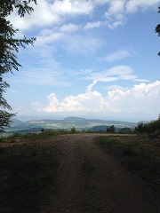
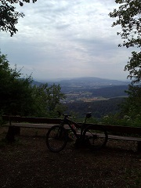

Jura Park Peak Catching Challenge 2014
"Catches" Blog
|  | 7.9. und 14.9.2014 Ich bin zurück für den Schlussspurt, nachdem ich die letzten Wochen das Training etwas auf sEiger Bike ausgerichtet und die Jura Park Hügel ohne GPS und Foto-Apparat erklommen habe. In den beiden letzten Catches habe ich je einen Hügel geholt, einerseits plane ich die restlichen nahen zu Fuss zu machen und diejenigen unten am Rhein in zwei langen Touren. Dafür fehlte mir dieses Weekend die Kraft, aber immerhin ist die Tour hinter den Tiersteinberg bereits geplant... Bis später! |
| 23.07.2014 50 schnelle Kilometer über Linner Linde, Bözberg, den Chreisacherturm und über den bisher unbekannten Tafel-Jura-Wald "Marchwald", Bözen, Zeihen, Staffelegg heim gedonnert. Das Foto zeigt, dass auch die langen Catches nicht minder reizvoll sind. |
| 20.07.2014 Wieder eine Regen-Runde hinter der Wasserflue über drei unbekannte Hügel. Neue GPS-Tracking-App eingesetzt und in der Abfahrt nach Oberhof einen Crash mit einem Reh nur haarscharf abgewendet. |
| 13.07.2014 55km und 1500m Steigung im Regen - die sechs Peaks's waren heute nicht gestohlen. Der Tiersteiberg war ein Erlebnis und die kleine Kapelle auf dem Bild ein wahrer Kraftort. |
|  | 28.06.2014 Linner Runde mit einer Pannen-Pause. Feine, neu entdeckte Abfahrt vom Zeiher Homberg. |
| 18.05.2014 Lange Runde mit Heimweh-Unter-Aaretaler David, den Geissberg als Singletrail-Eldoroda entdeckt und viel frische Luft. merci David fürs mitcho! |
| 09.05.2014 4 500er-Hügel mit 29'' Räder, viel Kartenkontakt und eine richtige Blueschtfahrt. Das obere Fricktal mit all seinen Reizen aufgesogen. |
| 01.05.2014 Schlammschlacht hinter der Staffelegg, den Trail über die Hinterlinde als Geheimtipp entdeckt und bei Erich das 29'' Hardtail bestellt :-). Alles guet! |
| 13.04.2014 Aus dem alten Kienberger Gips-Bruch ergibt sich ein Blick wie in Kanada. Super-Tour mit feinen, stillen Single-Trails und saftigen Aufstiegen. |
| 09.04.2014 Feierabend-Runde auf den höchsten Aargauer Berg - schönes Wetter, schöner Berg, schöne Abfahrt und 1 Peak weniger. |
 | 06.04.2014 Bözberg-Rundfahrt mit 2 flachen und 2 spitzigen Peaks und einem 20er-Schnitt. |
| 30.03.2014 Heute haben die Wanderer gebaslered und ich meine Karte verloren. Auch das GPS verabschiedete sich nach 14km. Es war trotzdem eine Super Erkundungstour auf den bisher unbekannten Forenberg mit einer unglaublichen Begegnung auf der Ruinde Alt Kienberg, drei Catches zu Fuss und einem falschen Peak (grrr). Auf die richtige Schnäpfelflue muess ich nochmals.... |
 | 16.03.2014 Wunder-Tour über den Strihen-Densbüren-Ruine Urgiz-Würz-Staffelegg. Zwar nur zwei Peaks, aber viel schöne Ecken entdeckt. |
 | 09.03.2014 Erster Catch mit dem Bike, in der Sonne und die Ruine Schenkenberg als AAA-Kinderspielplatz entdeckt! |
| 02.03.2014 Kick-Off zu Fuss über vier "Chöttiger" |
Aktueller Stand
14.09.2014 21:36
Peaks catched: 52 (75%)
Peaks to catch: 18 (25%)
Regeln
Als Berge zählen alle topografischen Erhebungen welche innerhalb einer JuraPark-Gemeinde und über 500 m.ü.M. liegen sowie auf der Landeskarte benannt sind.
Jeder Catch erfolgt von zu Hause aus und ohne fremde Verkehrsmittel. Als fremd gilt alles was nicht zu Fuss oder per Velo bewegt wird.
Der Challenge endet am 31.10.2014 24:00 Uhr.